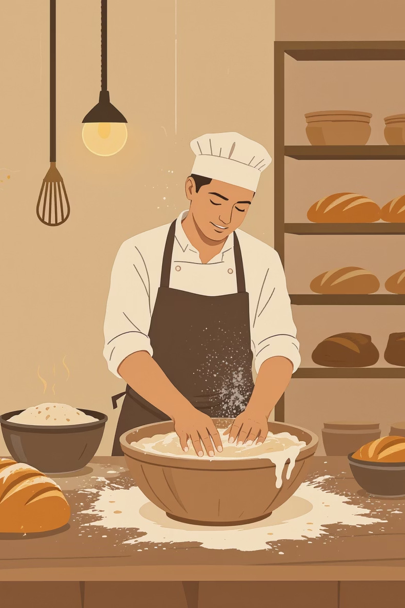
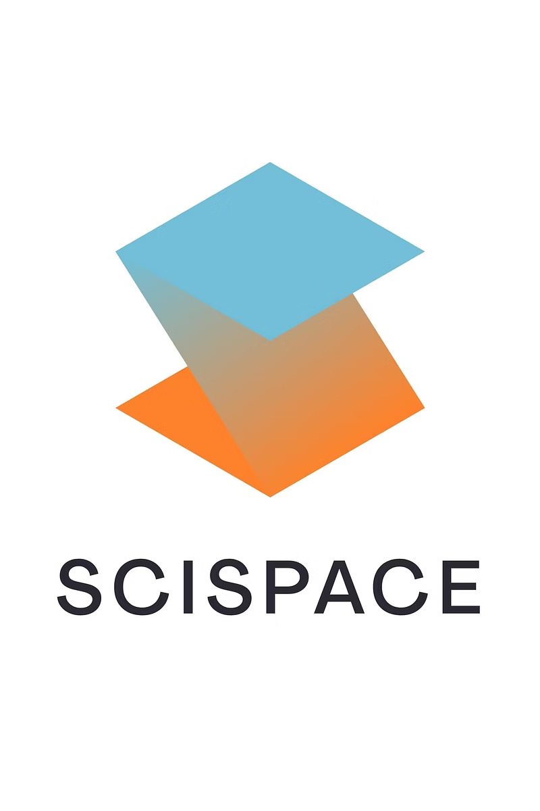
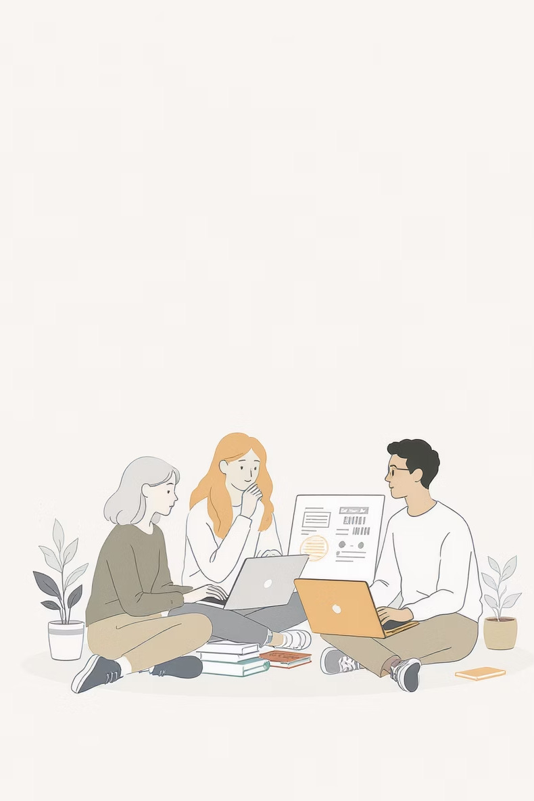

IQYA 3050 · Sesión 3 · 15 abr 2026
IA generativa para
investigación
Framework de decisión estratégica · by Luis H. Reyes
Mapa de herramientas
Matriz de decisión
Workflow
IQYA 3050 · Sesión 3 · 15 abr 2026
Framework de decisión estratégica · by Luis H. Reyes
Hoy
Panorama actual de herramientas de IA para investigación y cómo cada una se adapta a diferentes necesidades académicas.
Aplicaremos el framework de decisión a un caso real, desarrollando preguntas y asignando herramientas específicas.
Riesgos y limitaciones más importantes de cada herramienta para evitar errores comunes.
Pasos concretos para implementar estas herramientas en su proyecto de grado.
Caso de estudio

La masa madre representa un ingrediente fundamental en la panificación artesanal, con microorganismos únicos que varían según su origen geográfico. Colombia, con su rica biodiversidad y diferentes regiones climáticas, ofrece un escenario ideal para estudiar estas variaciones.
¿Cómo influye el origen geográfico de las masas madres colombianas en las propiedades mecánicas, estructura microscópica y características sensoriales del pan artesanal?
Esta investigación podría revelar diferencias significativas en la calidad panadera según la región de origen de la masa madre.
Reflexión personal
Tome 30 segundos para pensar en su enfoque natural.
Piense en su primer instinto: ¿buscar en Google, ir a la biblioteca, consultar un experto? No hay respuesta correcta o incorrecta aquí.
Considere las plataformas, bases de datos o recursos que normalmente utiliza para investigar temas complejos en su campo.
Reflexione sobre la secuencia lógica que seguiría: conceptos básicos, literatura especializada, metodologías, etc.
Diagnóstico
La propuesta · framework de decisión
Decidir estratégicamente cuál herramienta usar en cada momento del proceso investigativo, maximizando la eficiencia y calidad de los resultados obtenidos.
Desarrollar criterios claros para seleccionar la herramienta correcta le permitirá completar investigaciones más profundas en menos tiempo.
Este framework transformará su aproximación a la investigación, convirtiendo el proceso de búsqueda de información de una actividad dispersa a una estrategia sistemática y efectiva.
La pregunta fundamental
¿Qué debemos saber
para dar respuesta
a la pregunta de investigación?
Tipos de preguntas · 1 de 4
CONCEPTUALES
Buscan definiciones, explicaciones de funcionamiento, marcos teóricos fundamentales.
Ejemplo: "¿Qué es la fermentación láctica en masa madre?" o "¿Cómo influyen los microorganismos en la textura del pan?"
Tipos de preguntas · 2 de 4
EMPÍRICAS
Requieren evidencia científica, estudios previos, datos experimentales.
Ejemplo: "¿Qué investigaciones han comparado masas madres de diferentes regiones?" o "¿Existen datos sobre propiedades mecánicas del pan colombiano?"
Tipos de preguntas · 3 de 4
METODOLÓGICAS
Buscan técnicas de medición, protocolos experimentales, equipos especializados.
Ejemplo: "¿Cómo se mide la elasticidad de la masa?" o "¿Qué técnicas permiten analizar la microestructura del pan?"
Tipos de preguntas · 4 de 4
CONTEXTUALES
Requieren información específica sobre situaciones locales, regionales o culturales.
Ejemplo: "¿Qué tradiciones panificadoras existen en Colombia?" o "¿Cuáles son las condiciones climáticas de cada región?"
Decisión
| Si necesita… | Use… | Limitación crítica |
|---|---|---|
| Conceptos básicos y marcos teóricos | ChatGPT / Claude | ⚠ Siempre verificar después |
| Hechos actuales con fuentes citadas | Perplexity | ⚠ Análisis superficial |
| Literatura académica sintetizada | SciSpace / Consensus | ⚠ Solo acceso abierto |
| Búsqueda exhaustiva de papers | Google Scholar / WoS | ⚠ Proceso manual |
| Análisis de papers específicos | NotebookLM | ⚠ Necesita PDFs previos |
| Investigación comprensiva de tema | Deep Research | ⚠ 20+ min, solo fuentes abiertas |
Herramienta 1
Ejemplo
Actúa como un profesor de ingeniería química y de alimentos que asesora a un estudiante de penúltimo semestre. Este estudiante está trabajando apasionadamente en la estructuración de su proyecto de investigación final.
El reto de investigación que debe abordar es el siguiente: [INSERTE SU RETO ESPECÍFICO AQUÍ]
Tu objetivo es guiar al estudiante para que desarrolle un trabajo riguroso. Para lograrlo, diseña una guía de 12 preguntas críticas que cumplan con los siguientes criterios:
Deben aumentar progresivamente en complejidad. Deben preparar al estudiante para la formulación de una hipótesis sólida.
Tienen que abarcar obligatoriamente cuatro enfoques distintos. Asigna cada pregunta a una de estas categorías:
CONCEPTUALES: buscan definiciones, explicaciones de funcionamiento y marcos teóricos fundamentales.
EMPÍRICAS: requieren evidencia científica, estudios previos y datos experimentales.
METODOLÓGICAS: buscan técnicas de medición, protocolos experimentales y equipos especializados.
CONTEXTUALES: requieren información específica sobre situaciones locales, regionales o culturales.
Formato de respuesta: enumera las 12 preguntas. Etiqueta cada una con su categoría correspondiente e incluye una breve explicación de por qué responder esa pregunta específica es vital para el éxito de este proyecto.
Herramienta 2
Herramienta 3

Analiza automáticamente cientos de papers relacionados y extrae conclusiones comunes, ahorrando horas de revisión manual.
Detecta puntos de acuerdo y desacuerdo en la comunidad científica, revelando áreas consolidadas versus controversiales.
Facilita la comparación de diferentes enfoques experimentales y metodologías utilizadas en estudios similares.
Herramienta 4
Acceso completo a literatura académica, incluyendo papers de pago y acceso restringido que representan el 70% restante de publicaciones científicas.
Seguimiento de referencias hacia adelante y atrás, identificando trabajos fundamentales y desarrollos más recientes en el campo.
Evaluación de relevancia e impacto de papers individuales y autores mediante índices de citación y métricas bibliométricas.
Tip clave: use comillas para frases exactas, asteriscos para variaciones (ferment*), y paréntesis para agrupar términos relacionados.
Pro tip: puede usar ChatGPT para crear las ecuaciones booleanas.
Herramienta 5
Carga PDFs de papers descargados de Scholar, ResearchGate o bases institucionales para análisis automatizado.
Identifica diferencias y similitudes entre metodologías, resultados y conclusiones de múltiples estudios.
Localiza y extrae valores numéricos, condiciones experimentales o conclusiones de papers extensos.
Completamente gratuito y permite subir hasta 50 documentos simultáneamente para análisis cruzado.
Requiere PDFs descargados previamente. No busca ni descarga papers automáticamente.
Herramienta 6
La herramienta invierte 20-30 minutos explorando sistemáticamente el tema desde múltiples ángulos, consultando fuentes académicas, informes industriales, noticias especializadas y tendencias emergentes.
Integración
Genere 10 preguntas clave que guíen toda su investigación. Establezca el marco conceptual.
Obtenga una visión panorámica del estado actual del tema con fuentes citadas.
Busque sistemáticamente papers relevantes, sintetice hallazgos e identifique gaps.
Analice papers específicos descargados, extraiga metodologías y compare resultados.
Verifique información crítica usando al menos 3 fuentes independientes y documente discrepancias.
Tiempo estimado total: 4-6 horas para investigación comprehensiva vs. 15-20 horas con métodos tradicionales.
En clase

15 minutos
Use el prompt sugerido adaptándolo a su proyecto. Cree preguntas que progresen en complejidad.
20 minutos
Categorice cada pregunta (conceptual, empírica, metodológica, contextual) y determine la herramienta adecuada.
10 minutos
Presente 2-3 de sus mejores preguntas y justifique la selección. Reciba feedback de compañeros y profesor.
Siguiente sección
En la próxima sección abordaremos los errores más costosos que pueden comprometer toda su investigación, las señales de alerta que debe reconocer y las estrategias de verificación que garantizarán la credibilidad de su trabajo académico.